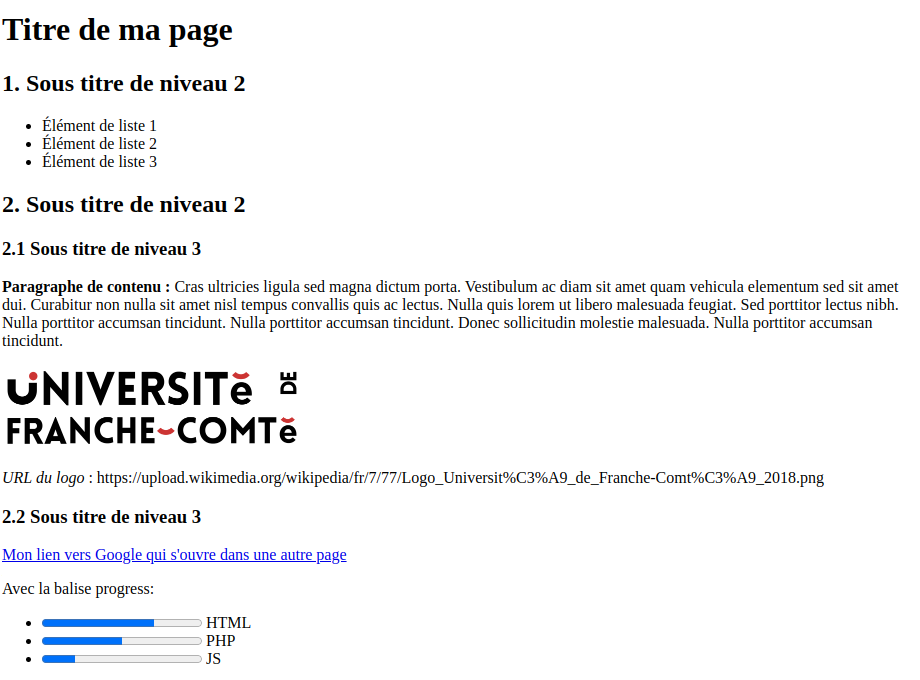

Objectif :

Solution :
À verifier :
- Langue spécifiée à fr dans la balise html
- Utilisation de balises section
- target="_blank" dans le lien vers google, pour que la page s'ouvre dans un nouvel onglet.
- Pourcentage des barres "progress" spécifiés avec les attributs max et value
- Balises "progress" dans une structure ul - li